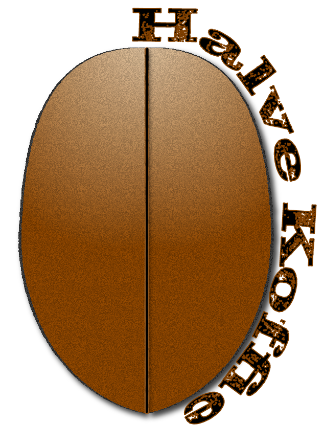

Actueel
De stad is een plek waar herinneringen zijn ingeschreven, maar het is ook een ruimte van macht die deze herinneringen kan wissen of herschrijven.
-Michel Foucault

Waarom nu?
Waarom vind ik het belangrijk om nu opnieuw naar De Halve Wereld te kijken?
Huisvesting, natuur en leven zijn geen crises—maar de systemen die ze zo maken. In tijden waarin ecologie en samenleven als 'linkse hobby's' worden bestempeld, toont De Halve Wereld dat stedelijke ontwikkeling van bewoners moet zijn, niet alleen van projectontwikkelaars en overheden.
Waarom belangrijk?

Betaalbare en diverse woonruimte: Dit soort wooncomplexen bieden plek aan iedereen.
Ik geef ze een tweede of derde levenzegt hij.
Behoud van sociale structuren: In plaats van anonieme woonblokken of kantoorgebouwen, creërt DHW gemeenschappen waar mensen samenleven, samenwerken en zelfbeheer uitoefenen.
Cultureel en historisch behoud: DHW beschermt historische stadsdelen tegen grootschalige sloop en projectontwikkeling, waardoor een stad haar unieke karakter behoudt.
Duurzaamheid en leefbaarheid: Veel van deze gebouwen, zoals De Halve Wereld, integreren groene daken, zonnepanelen en collectieve tuinen, wat bijdraagt aan een gezondere leefomgeving en minder CO₂-uitstoot.
Ruimte voor experiment en inspraak: DHW laat zien dat alternatieve vormen van stadsontwikkeling mogelijk zijn, waarbij bewoners directe invloed hebben op hun leefomgeving in plaats van afhankelijk te zijn van top-down beslissingen.

Wil je DHW beter leren kennen?
Kom naar het koffie-uurtje op donderdag om 11u.
